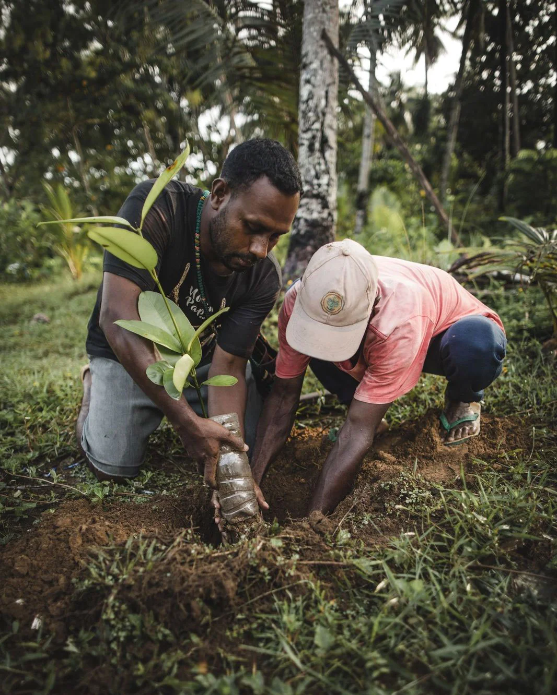
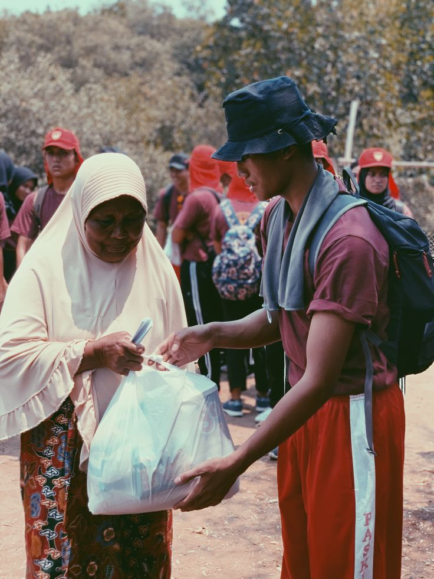
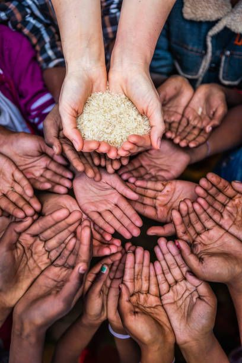
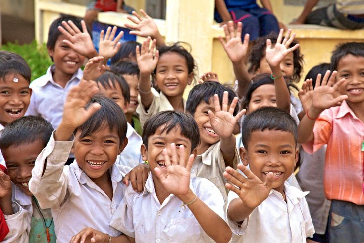

Bantu Korban Karhutla
Asap dan kebakaran hutan melanda Sumatra dan Kalimantan, ribuan warga terdampak gangguan pernapasan dan sekolah terpaksa diliburkan.
Donasi


Karena setiap kepedulian, sekecil apapun, membawa harapan baru bagi mereka yang terdampak.

Indonesia berada di jalur Ring of Fire, membuat saudara-saudara kita rentan menghadapi ancaman bencana alam sewaktu-waktu. Uluran Nusantara hadir sebagai wadah aksi cepat tanggap kemanusiaan. Kami bergerak menyalurkan bantuan darurat hingga pemulihan fasilitas publik, memastikan para penyintas tidak berjuang sendirian di tengah masa sulit.
Menjadi garisan terdepan aksi kemanusiaan yang menghubungkan kepedulian masyarakat dengan penanganan darurat serta pemulihan pascabencana bagi warga terdampak di seluruh wilayah Indonesia
Asap dan kebakaran hutan melanda Sumatra dan Kalimantan, ribuan warga terdampak gangguan pernapasan dan sekolah terpaksa diliburkan.
DonasiGempa magnitudo 5,3 mengguncang Cilacap, menyebabkan kerusakan bangunan dan kepanikan warga di wilayah selatan Jawa Tengah.
DonasiBanjir dan tanah longsor merendam 13 desa di Kabupaten Lebak, memaksa warga mengungsi dan kehilangan akses jalan utama.
DonasiCuaca ekstrem disertai angin kencang merusak puluhan rumah warga di Kota Binjai, Sumatera Utara.
DonasiPunya pertanyaan terkait penyaluran donasi, konfirmasi transfer, atau ingin menjadi relawan lapangan? Tim Uluran Nusantara siap membantu Anda.